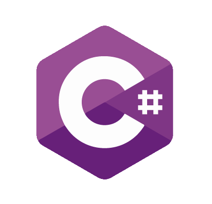
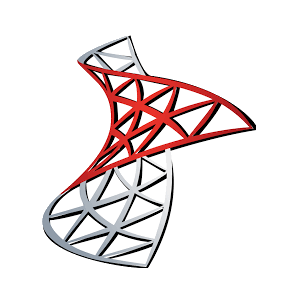
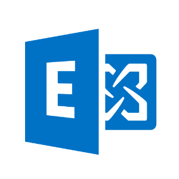
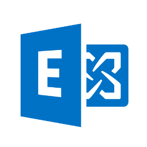
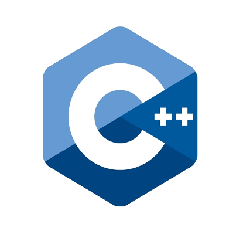

Experiences
-

Refresh IT Solutions
2009 >
-
MonoprixCrédit AgricoleLa PosteCNPDartyBuffalo grillAG2R La mondialeSuez
Migration de systèmes de messagerie
2 mois - 2009 Janvier - Février  

-
Intégration d'outils de synchronisation d'annuaires et de migration de systèmes de messageries
(Migration de messageries Domino/ Google Mail/Exchange 2007 2010 2013 vers Exchange Online/ Exchagne On Premise).
En fonction des contextes des projets/clients, réalisation des actions suivantes:- + Gestion de projet ( < 1500 boites)
- + Préparation de la plateforme de migration
- + Installation, configuration et personnalisation des outils de migration
- + Synchonisation d'annuaires LDAP
- + Validation et Pilote de migration de boite aux lettres
- + Déploiement et supervision des migrations de boites aux lettres à l'international
- + Support et formation des partenaires en fr/en
Environnement technique: Windows, Powershell scripting, Exchange on Premise/Online, Domino, Google mail, Zimbra, Active directory, MSSQL, Webservices ASP .net, C#
-
-
Télédiffusion de france
- Développements et Evolutions d'outils de migration
2 mois - 2009 Janvier - Février
-
- + Développement d'un logiciel de conversion de boite aux lettres Domino en pst
- + Ajout d'une fonctionnalité de génération de rapports excel de migration à partir de données
- + Ajout d'une fonctionnalité de mise en cache de module powershell
- + Développement d'un outils export d'annuaire Domino
- + Développement d'un outils de vérification de prérequis machine pour une migration
( RAM, espace disque, flux reseau, compte d'accés aux annuaires/ messageries)
Environnement technique: Windows, Powershell scripting, Exchange on Premise/Online, Domino, Google mail, Zimbra, Active directory, MSSQL, Webservices ASP .net, C#
-
-
-

GFI
2007 - 2009
-
Télédiffusion de france
- Evolution logiciel de detection vidéo
2 mois - 2009 Janvier - Février-
Evolution d’un logiciel de détection de plages d’images uniformes dans un flux vidéo. Le logiciel détecte des images dans le flux et pilote des équipements vidéo via commandes RS232.
- + Utilisation d’un kit de développement Elecard,
- + Ajout de la détection de plages sur des flux H264 HD,
Environnement technique: Visual studio, C++, DirectShow, Filtres Elecard
-
-
Ministère des affaires étrangères
- Module de gestion des demandes Visa pour les ambassades
7 mois - 2008 Mai - Novembre-
Etude et spécification d’un module permettant aux ambassades et consulats de communiquer avec les systèmes de gestion de VISA Nationaux et Européens.
- + Etude des échanges et des formats des messages,
- + Prototypage et validation de points techniques,
- + Rédaction des documents de spécifications techniques détaillées.
Environnement technique: Visual studio, C++, SOAP, librairies cSOAP, gSOAP, XML
-
-
ORANGE Business Services
- Qualification de serveurs de video à la demande
7 mois - 2007 Juin - Février-
Qualification de la plateforme MaLigne TV:
- + Rédaction de cahiers de tests,
- + Responsable de la qualification des nouvelles versions de serveurs vidéos (Sapphire & Kasenna),
- + Qualification d’un service de jeu interactif pour Orange TV
Environnement technique: HP Quality center: Solution de gestion de campagne de tests, RTSP: Real Time Streaming Protocol, Serveurs Vidéo Sapphire (Thomson) / Mediabase (Kasenna),
-
-
-

Elios Informatique
2004 - 2006
-
THOMSON Broadcast et multimedia
- Evolution d'un activeX de lecture video
7 mois - 2006 mars - Aout-
Ajout de fonctionnalités à un activeX permettant la lecture de flux ou fichiers vidéo de type transport :
- + Lecture de flux vidéo H264 via le protocole RTP,
- + Lecture en mode avance et retour rapide de fichiers vidéo
-
Amélioration et extension de l’interface graphique d’une application pour pda et mobile (fonctionnant sous Windows mobile) permettant la lecture de flux DVB - H
Environnement technique: Windows, Visual studio, C++, Photoshop, Direct Show, ActiveX, RTP: Real Time Protocol, RTSP: Real Time Streaming Protocol, Mpeg 2 Transport Stream, H264, Advance Audio Coding
-
-
-
Electricité et réseaux de France
- Passerelle de commutation pour le réseau ERDF
14 mois - 2005 mars - Aout

-
Réalisation d’une passerelle de commutation et de conversion de messages entre le réseau de télé-conduite EDF/RTE et un poste fabriqué par SIEMENS.
L’application inclut les fonctions de filtrage, routage des messages, conversion de protocoles, de base de données et de fonctionnement en mode dégradé :- + Conception, développement et tests unitaires de l’application (principal développeur), en univers de simulation, sur PC Linux.
- + Portage, intégration et validation de l’application dans l’environnement embarqué cible (sous système temps réel Open Source Ecos),
- + Réalisation d’une interface web de configuration, de la passerelle via des pages ASP
- + Développement (sous Windows) d’utilitaire de dépouillement de fichiers de trace et de log (journaux),
Environnement technique: Linux (Debian) pour les développements et la simulation, eCos (OS Temps Réel), Multithreading, interfaces socket, C, Gdb, GoAhead Web Server, Parser XML Xerces, CVS
-
-
Télédiffusion de france
- Réalisation plateforme de traitement vidéo
7 mois - 2003 Mars - Aout


-
Dans le cadre du projet Inter et Video Service, recherche et développement d'une application Web de traitement video, comportant les fonctions:
- + Publication et consultation de contenus audiovisuels,
- + numérisation, d’édition, d’insertion de logo/titre,
- + d’extraction de vignettes, d’indexation des videos
- + transcodage des videos en bas débits/MPG2
- + gravure des videos sur dvd
Environnement technique: PHP, MySql, C++, HTML, Javascript, Dreamweaver, Visual C++, contrôles ActiveX, Filtre DirectShow, API Nero 6
VirtualDub, TMPGEnc, Avisynth, Players et Encodeurs (Windows et Real)
-